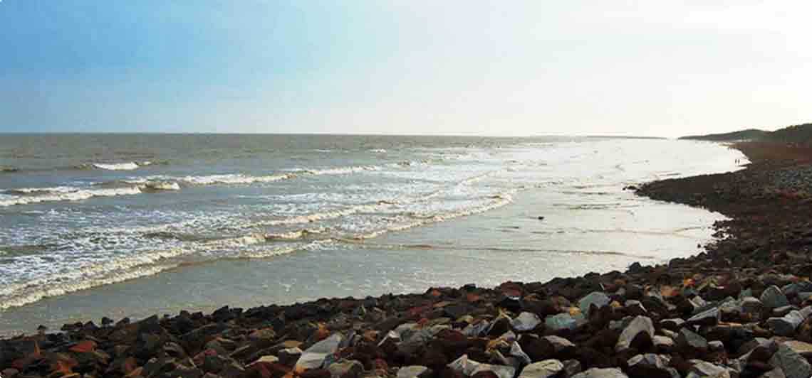

Radhanagar Beach, Andaman& Nicobar Islands

This is the second-longest beach in Asia. It is famous for its unique sand texture. One can’t afford to miss the sunset from this beach. The scenery is breathtaking as well as the orange pink purple sky is something which you cannot forget once you see it.
Best Time To Visit: October to May.
Marari Beach, Kerala

Alleppey (Alappuzha) is famous for its backwaters and houseboat stays. This beach isn’t yet discovered by many people and is calm, peaceful and quiet. It’s the best place to visit if you wish to spend some quality time with yourself. Find your inner peace. It is bordered by a small fishing village named Mararikulam.
Best Time To Visit: December to March.
Golden Beach, Odisha

Puri Beach or the Golden beach is a beach in the city of Puri in the state of Odisha, India. It is on the shore of the Bay of Bengal. It is known for being a tourist attraction and a Hindu sacred place. The beach is the site of the annual Puri Beach Festival, which is co-sponsored by the Indian Ministry of Tourism, the city of Odisha, the Development Commissioner of Handicrafts, and the Eastern Zonal Cultural Center, Kolkata. The beach hosts sand art displays, including work by international award-winning local sand artist Sudarshan Pattnaik. The Golden Beach at Puri was awarded the prestigious 'Blue Flag' tag on October 11, 2020 by the Foundation for Environment Education (FEE), Denmark.
Best Time To Visit: June to March
Talasari Beach, Odisha
Talasari’s literal translation is Row of Palm trees, Tala meaning Palm and Sari meaning Row. Therefore, the beach is surrounded by palm and coconut trees. This beach is not much explored as the rest beaches in Odisha. The surroundings are beautiful and quiet, which will help calm your mind.
Best Time To Visit: October to December, and February.
Bhogwe Beach, Kudal

It is located in Kudal, Sindhudurg district of Maharashtra. Bhogwe beach is situated in Bhogwe village. This is an unexplored beach, hence, you can call it a hidden gem. One can’t stop admiring its beauty and the surroundings that it offers. There are various resorts and hotels that serve the best Konkani Food. There is a Dolphin Spot if you wish to see. You can spot white dolphins.
Best Time to visit: October to February.
Baga Beach, Goa

It is named after Baga creek located in the Arabian Sea. Where Calangute beach ends, that’s where Baga Beach starts. This beach is famous for the nightlife as well as the amazing party life. There are various shops on the street side of the beach itself to shop from and pick up souvenirs. There are beach-facing restaurants that serve great food. This beach also offers a great variety of water sports.